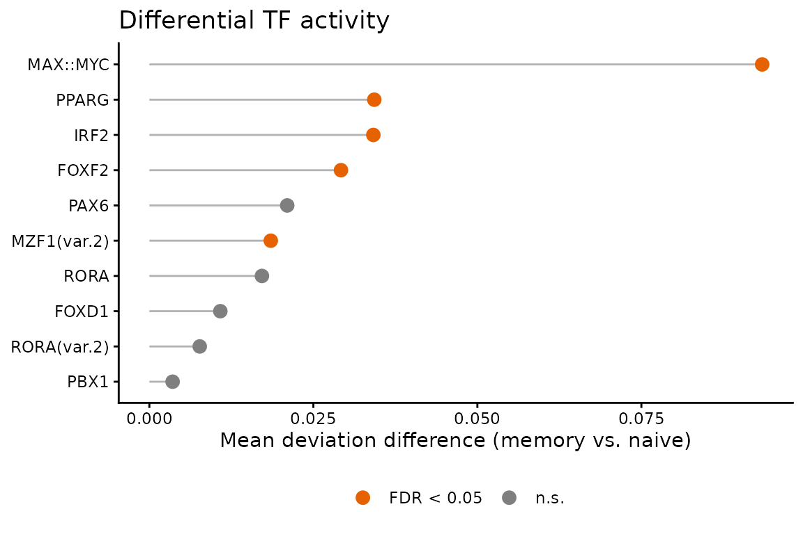

Case study: TF activity in memory vs. naive T cells
Irem B. Gündüz, Sarath Kumar Murugan, Fabian Muller
2026-07-22
Source:vignettes/memTcells.Rmd
memTcells.RmdOverview
CD4+ T cells reshape their regulatory programs as they differentiate
from a naive to a memory state. This case study uses
methylTFR deviation scores to ask a focused question:
which transcription factors show differential activity between
memory and naive T cells?
We reuse deviation matrices bundled with the package
(tc_mem, tc_naive), so the analysis runs
end-to-end without downloading the hg38 annotation. See the Get started vignette for how deviations are
computed from raw WGBS data.
library(methylTFR)
#> Loading required package: data.table
#> Warning: multiple methods tables found for 'sort'
#> Warning: multiple methods tables found for 'sort'
#> Warning: replacing previous import 'S4Arrays::read_block' by
#> 'DelayedArray::read_block' when loading 'HDF5Array'
#> Warning: replacing previous import 'S4Arrays::read_block' by
#> 'DelayedArray::read_block' when loading 'SummarizedExperiment'
#> Warning: multiple methods tables found for 'sort'
#>
#> Attaching package: 'methylTFR'
#> The following objects are masked from 'package:base':
#>
#> cbind, rbind
library(ggplot2)Deviation data
Each object is a methylTFRdeviations matrix of motifs
(rows) by samples (columns). We combine the two groups into a single
matrix.
load(system.file("extdata", "tc_mem.rda", package = "methylTFR"))
load(system.file("extdata", "tc_naive.rda", package = "methylTFR"))
devs <- cbind(tc_mem, tc_naive)
devs
#> class: methylTFRdeviations
#> dim: 10 10
#> metadata(0):
#> assays(2): deviations z
#> rownames(10): FOXF2 FOXD1 ... RORA RORA(var.2)
#> rowData names(1): motifs
#> colnames(10): Tc-Mem_OP_S5_Long_D1.bedGraph.bed
#> Tc-Mem_OP_S4_Long_D60.bedGraph.bed ...
#> Tc-Naive_OP_S4_Long_D1.bedGraph.bed
#> Tc-Naive_OP_S3_High_D1.bedGraph.bed
#> colData names(4): CommonMinID condition cell_type bedFileGroup labels are taken from the sample names (the prefix before
_).
Differential TF activity
differential_deviation_test() compares deviation scores
between the two groups per motif. With two groups and
parametric = TRUE this is a t-test, followed by
Benjamini-Hochberg correction.
tc_result <- differential_deviation_test(
deviations = devs,
groups = groups,
alternative = "two.sided",
parametric = TRUE,
padjMethod = "BH"
)
tc_result <- tc_result[order(tc_result$p_value_adjusted), ]
tc_result
#> motifs p_value p_value_adjusted mean_difference
#> MAX::MYC MAX::MYC 1.078111e-05 0.0001078111 0.093414294
#> IRF2 IRF2 1.873667e-03 0.0093683362 0.034142762
#> PPARG PPARG 3.996324e-03 0.0133210805 0.034286836
#> FOXF2 FOXF2 1.694736e-02 0.0355317162 0.029207590
#> MZF1(var.2) MZF1(var.2) 1.776586e-02 0.0355317162 0.018508308
#> PAX6 PAX6 7.709712e-02 0.1284951966 0.021013722
#> RORA RORA 2.084783e-01 0.2978261195 0.017159124
#> FOXD1 FOXD1 3.644010e-01 0.4555013119 0.010816363
#> RORA(var.2) RORA(var.2) 5.172906e-01 0.5747672942 0.007677473
#> PBX1 PBX1 6.785692e-01 0.6785692148 0.003544582The mean_difference column is the absolute difference in
mean deviation between memory and naive cells: larger values flag TFs
whose binding-site methylation shifts most with differentiation.
Ranking the top TFs
We visualise motifs by effect size, highlighting those passing an FDR cutoff of 0.05.
tc_result$motifs <- factor(
tc_result$motifs,
levels = tc_result$motifs[order(tc_result$mean_difference)]
)
tc_result$significant <- ifelse(
tc_result$p_value_adjusted < 0.05,
"FDR < 0.05", "n.s."
)
ggplot(tc_result, aes(x = mean_difference, y = motifs, colour = significant)) +
ggplot2::geom_segment(
aes(x = 0, xend = mean_difference, yend = motifs),
colour = "grey70"
) +
ggplot2::geom_point(size = 3) +
ggplot2::scale_colour_manual(
values = c("FDR < 0.05" = "#E66100", "n.s." = "grey50")
) +
ggplot2::labs(
x = "Mean deviation difference (memory vs. naive)",
y = NULL, colour = NULL,
title = "Differential TF activity"
) +
theme_classic() +
theme(legend.position = "bottom")
Interpretation
TFs at the top of the ranking are the strongest candidates for
driving memory-specific regulatory changes: their binding sites lose or
gain methylation as cells transition out of the naive state. These hits
are a natural starting point for footprint inspection
(plotExpectedFootprint(), shown in the main vignette) or
for follow-up in a larger cohort.
Because the bundled data is a small subset (10 motifs, 5 samples per
group), the values here are illustrative. On the full BLUEPRINT memory
T-cell panel the same workflow scales to thousands of motifs via
run_methyltfr().
Session Information
sessionInfo()
#> R version 4.4.1 (2024-06-14)
#> Platform: x86_64-conda-linux-gnu
#> Running under: Debian GNU/Linux 11 (bullseye)
#>
#> Matrix products: default
#> BLAS/LAPACK: /icbb/projects/share/software/packages/miniconda3/envs/igunduz/lib/libopenblasp-r0.3.21.so; LAPACK version 3.9.0
#>
#> locale:
#> [1] LC_CTYPE=en_US.UTF-8 LC_NUMERIC=C
#> [3] LC_TIME=en_US.UTF-8 LC_COLLATE=en_US.UTF-8
#> [5] LC_MONETARY=en_US.UTF-8 LC_MESSAGES=en_US.UTF-8
#> [7] LC_PAPER=en_US.UTF-8 LC_NAME=C
#> [9] LC_ADDRESS=C LC_TELEPHONE=C
#> [11] LC_MEASUREMENT=en_US.UTF-8 LC_IDENTIFICATION=C
#>
#> time zone: Europe/Berlin
#> tzcode source: system (glibc)
#>
#> attached base packages:
#> [1] stats graphics grDevices utils datasets methods base
#>
#> other attached packages:
#> [1] ggplot2_4.0.1 methylTFR_0.99.0 data.table_1.17.2 BiocStyle_2.34.0
#>
#> loaded via a namespace (and not attached):
#> [1] SummarizedExperiment_1.32.0 gtable_0.3.6
#> [3] xfun_0.52 bslib_0.9.0
#> [5] htmlwidgets_1.6.4 rhdf5_2.46.1
#> [7] Biobase_2.62.0 lattice_0.22-5
#> [9] generics_0.1.4 rhdf5filters_1.14.1
#> [11] vctrs_0.6.5 tools_4.4.1
#> [13] bitops_1.0-9 parallel_4.4.1
#> [15] stats4_4.4.1 tibble_3.2.1
#> [17] pkgconfig_2.0.3 R.oo_1.27.1
#> [19] Matrix_1.6-1.1 RColorBrewer_1.1-3
#> [21] S7_0.2.0 desc_1.4.3
#> [23] S4Vectors_0.40.1 lifecycle_1.0.4
#> [25] GenomeInfoDbData_1.2.13 stringr_1.5.1
#> [27] compiler_4.4.1 farver_2.1.2
#> [29] textshaping_0.4.0 GenomeInfoDb_1.42.3
#> [31] htmltools_0.5.8.1 sass_0.4.10
#> [33] RCurl_1.98-1.13 yaml_2.3.10
#> [35] pillar_1.10.2 pkgdown_2.2.0
#> [37] crayon_1.5.3 jquerylib_0.1.4
#> [39] R.utils_2.13.0 DelayedArray_0.28.0
#> [41] cachem_1.1.0 abind_1.4-8
#> [43] tidyselect_1.2.1 digest_0.6.37
#> [45] stringi_1.8.4 dplyr_1.1.3
#> [47] bookdown_0.43 labeling_0.4.3
#> [49] fastmap_1.2.0 grid_4.4.1
#> [51] cli_3.6.3 SparseArray_1.2.4
#> [53] magrittr_2.0.3 logger_0.4.0
#> [55] S4Arrays_1.6.0 dichromat_2.0-0.1
#> [57] withr_3.0.2 UCSC.utils_1.2.0
#> [59] scales_1.4.0 rmarkdown_2.29
#> [61] XVector_0.42.0 httr_1.4.7
#> [63] matrixStats_1.1.0 ragg_1.3.3
#> [65] R.methodsS3_1.8.2 HDF5Array_1.30.1
#> [67] evaluate_1.0.3 knitr_1.50
#> [69] GenomicRanges_1.54.1 IRanges_2.36.0
#> [71] rlang_1.1.4 glue_1.7.0
#> [73] BiocManager_1.30.25 BiocGenerics_0.52.0
#> [75] jsonlite_2.0.0 R6_2.6.1
#> [77] Rhdf5lib_1.28.0 MatrixGenerics_1.14.0
#> [79] systemfonts_1.2.3 fs_1.6.6
#> [81] zlibbioc_1.52.0